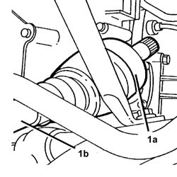

2710A12 DRIVE SHAFT COMPLETE WITH JOINTS (ONE), L/H OR R/H - R + R WITH DIFFERENTIAL END JOINT OR WHEEL END JOINT DISCONNECTED
- Path
- Procedures > 27 AXLE > 2710 FRONT AXLE > 2710A DRIVE SHAFTS AND JOINTS > 2710A12 DRIVE SHAFT COMPLETE WITH JOINTS (ONE), L/H OR R/H - R + R WITH DIFFERENTIAL END JOINT OR WHEEL END JOINT DISCONNECTED
- Kind
- repair procedure (removal / refitting; the operation number is the code)
- Applies to
- all engines; all production periods
- Interactive page
- https://sloeber94.github.io/elrnDB-fUlss/en/#/179007268
Applies to: all engines; all production periods
 Removing
Removing
 Refitting
Refitting1. Prise up internal drive shaft (1a) from the differential, then remove left drive shaft (1b).

Applies to: all engines; all production periods
Refitting
Removing- Position the driveshaft in the housing on the vehicle.
- Connect the driveshaft to the differential internal driveshaft.